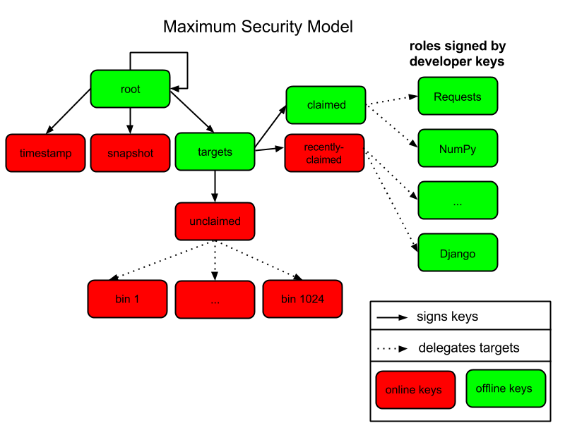

PEP 0458 -- Surviving a Compromise of PyPI
| PEP: | 458 |
|---|---|
| Title: | Surviving a Compromise of PyPI |
| Author: | Trishank Karthik Kuppusamy <trishank at nyu.edu>, Vladimir Diaz <vladimir.diaz at nyu.edu>, Donald Stufft <donald at stufft.io>, Justin Cappos <jcappos at nyu.edu> |
| BDFL-Delegate: | Richard Jones < r1chardj0n3s@gmail.com > |
| Discussions-To: | DistUtils mailing list < distutils-sig at python.org > |
| Status: | Draft |
| Type: | Standards Track |
| Created: | 27-Sep-2013 |
Contents
- Abstract
- Motivation
- Threat Model
- Definitions
- Overview of TUF
- Integrating TUF with PyPI
- PyPI and TUF Metadata
- PyPI and Key Requirements
- How Should Metadata be Generated?
- Key Compromise Analysis
- Appendix A: Repository Attacks Prevented by TUF
- Appendix B: Extension to the Minimum Security Model
- Appendix C: PEP 470 and Projects Hosted Externally
- References
- Acknowledgements
- Copyright
Abstract
This PEP proposes how the Python Package Index (PyPI [1] ) should be integrated with The Update Framework [2] (TUF). TUF was designed to be a flexible security add-on to a software updater or package manager. The framework integrates best security practices such as separating role responsibilities, adopting the many-man rule for signing packages, keeping signing keys offline, and revocation of expired or compromised signing keys. For example, attackers would have to steal multiple signing keys stored independently to compromise a role responsible for specifying a repository's available files. Another role responsible for indicating the latest snapshot of the repository may have to be similarly compromised, and independent of the first compromised role.
The proposed integration will allow modern package managers such as pip [3] to be more secure against various types of security attacks on PyPI and protect users from such attacks. Specifically, this PEP describes how PyPI processes should be adapted to generate and incorporate TUF metadata (i.e., the minimum security model). The minimum security model supports verification of PyPI distributions that are signed with keys stored on PyPI: distributions uploaded by developers are signed by PyPI, require no action from developers (other than uploading the distribution), and are immediately available for download. The minimum security model also minimizes PyPI administrative responsibilities by automating much of the signing process.
This PEP does not prescribe how package managers such as pip should be adapted to install or update projects from PyPI with TUF metadata. Package managers interested in adopting TUF on the client side may consult TUF's library documentation [27] , which exists for this purpose. Support for project distributions that are signed by developers (maximum security model) is also not discussed in this PEP, but is outlined in the appendix as a possible future extension and covered in detail in PEP 480 [26] . The PEP 480 extension focuses on the maximum security model, which requires more PyPI administrative work (none by clients), but it also proposes an easy-to-use key management solution for developers, how to interface with a potential future build farm on PyPI infrastructure, and discusses the feasibility of end-to-end signing.
Motivation
In January 2013, the Python Software Foundation (PSF) announced [4] that the python.org wikis for Python, Jython, and the PSF were subjected to a security breach that caused all of the wiki data to be destroyed on January 5, 2013. Fortunately, the PyPI infrastructure was not affected by this security breach. However, the incident is a reminder that PyPI should take defensive steps to protect users as much as possible in the event of a compromise. Attacks on software repositories happen all the time [5] . The PSF must accept the possibility of security breaches and prepare PyPI accordingly because it is a valuable resource used by thousands, if not millions, of people.
Before the wiki attack, PyPI used MD5 hashes to tell package managers, such as pip, whether or not a package was corrupted in transit. However, the absence of SSL made it hard for package managers to verify transport integrity to PyPI. It was therefore easy to launch a man-in-the-middle attack between pip and PyPI, and change package content arbitrarily. Users could be tricked into installing malicious packages with man-in-the-middle attacks. After the wiki attack, several steps were proposed (some of which were implemented) to deliver a much higher level of security than was previously the case: requiring SSL to communicate with PyPI [6] , restricting project names [7] , and migrating from MD5 to SHA-2 hashes [8] .
These steps, though necessary, are insufficient because attacks are still possible through other avenues. For example, a public mirror is trusted to honestly mirror PyPI, but some mirrors may misbehave due to malice or accident. Package managers such as pip are supposed to use signatures from PyPI to verify packages downloaded from a public mirror [9] , but none are known to actually do so [10] . Therefore, it would be wise to add more security measures to detect attacks from public mirrors or content delivery networks [11] (CDNs).
Even though official mirrors are being deprecated on PyPI [12] , there remain a wide variety of other attack vectors on package managers [13] . These attacks can crash client systems, cause obsolete packages to be installed, or even allow an attacker to execute arbitrary code. In September 2013 [28] , a post was made to the Distutils mailing list showing that the latest version of pip (at the time) was susceptible to such attacks, and how TUF could protect users against them [14] . Specifically, testing was done to see how pip would respond to these attacks with and without TUF. Attacks tested included replay and freeze, arbitrary packages, slow retrieval, and endless data. The post also included a demonstration of how pip would respond if PyPI were compromised.
With the intent to protect PyPI against infrastructure compromises, this PEP proposes integrating PyPI with The Update Framework [2] (TUF). TUF helps secure new or existing software update systems. Software update systems are vulnerable to many known attacks, including those that can result in clients being compromised or crashed. TUF solves these problems by providing a flexible security framework that can be added to software updaters.
Threat Model
The threat model assumes the following:
- Offline keys are safe and securely stored.
- Attackers can compromise at least one of PyPI's trusted keys stored online, and may do so at once or over a period of time.
- Attackers can respond to client requests.
An attacker is considered successful if they can cause a client to install (or leave installed) something other than the most up-to-date version of the software the client is updating. If the attacker is preventing the installation of updates, they want clients to not realize there is anything wrong.
Definitions
The keywords "MUST", "MUST NOT", "REQUIRED", "SHALL", "SHALL NOT", "SHOULD", "SHOULD NOT", "RECOMMENDED", "MAY", and "OPTIONAL" in this document are to be interpreted as described in RFC 2119 [29] .
This PEP focuses on integrating TUF with PyPI; however, the reader is encouraged to read about TUF's design principles [2] . It is also RECOMMENDED that the reader be familiar with the TUF specification [16] .
Terms used in this PEP are defined as follows:
- Projects: Projects are software components that are made available for integration. Projects include Python libraries, frameworks, scripts, plugins, applications, collections of data or other resources, and various combinations thereof. Public Python projects are typically registered on the Python Package Index [17] .
- Releases: Releases are uniquely identified snapshots of a project [17] .
- Distributions: Distributions are the packaged files that are used to publish and distribute a release [17] .
- Simple index: The HTML page that contains internal links to the distributions of a project [17] .
- Roles: There is one root role in PyPI. There are multiple roles whose responsibilities are delegated to them directly or indirectly by the root role. The term top-level role refers to the root role and any role delegated by the root role. Each role has a single metadata file that it is trusted to provide.
- Metadata: Metadata are signed files that describe roles, other metadata, and target files.
- Repository: A repository is a resource comprised of named metadata and target files. Clients request metadata and target files stored on a repository.
- Consistent snapshot: A set of TUF metadata and PyPI targets that capture the complete state of all projects on PyPI as they existed at some fixed point in time.
- The snapshot ( release ) role: In order to prevent confusion due to the different meanings of the term "release" used in PEP 426 [17] and the TUF specification [16] , the release role is renamed as the snapshot role.
- Developer: Either the owner or maintainer of a project who is allowed to update the TUF metadata as well as distribution metadata and files for the project.
- Online key: A private cryptographic key that MUST be stored on the PyPI server infrastructure. This is usually to allow automated signing with the key. However, an attacker who compromises the PyPI infrastructure will be able to read these keys.
- Offline key: A private cryptographic key that MUST be stored independent of the PyPI server infrastructure. This prevents automated signing with the key. An attacker who compromises the PyPI infrastructure will not be able to immediately read these keys.
- Threshold signature scheme: A role can increase its resilience to key compromises by specifying that at least t out of n keys are REQUIRED to sign its metadata. A compromise of t-1 keys is insufficient to compromise the role itself. Saying that a role requires (t, n) keys denotes the threshold signature property.
Overview of TUF
At its highest level, TUF provides applications with a secure method of obtaining files and knowing when new versions of files are available. On the surface, this all sounds simple. The basic steps for updating applications are:
- Knowing when an update exists.
- Downloading a correct copy of the latest version of an updated file.
The problem is that updating applications is only simple when there are no malicious activities in the picture. If an attacker is trying to interfere with these seemingly simple steps, there is plenty they can do.
Assume a software updater takes the approach of most systems (at least the ones that try to be secure). It downloads both the file it wants and a cryptographic signature of the file. The software updater already knows which key it trusts to make the signature. It checks that the signature is correct and was made by this trusted key. Unfortunately, the software updater is still at risk in many ways, including:
- An attacker keeps giving the software updater the same update file, so it never realizes there is an update.
- An attacker gives the software updater an older, insecure version of a file that it already has, so it downloads that one and blindly uses it thinking it is newer.
- An attacker gives the software updater a newer version of a file it has but it is not the newest one. The file is newer to the software updater, but it may be insecure and exploitable by the attacker.
- An attacker compromises the key used to sign these files and now the software updater downloads a malicious file that is properly signed.
TUF is designed to address these attacks, and others, by adding signed metadata (text files that describe the repository's files) to the repository and referencing the metadata files during the update procedure. Repository files are verified against the information included in the metadata before they are handed off to the software update system. The framework also provides multi-signature trust, explicit and implicit revocation of cryptograhic keys, responsibility separation of the metadata, and minimizes key risk. For a full list and outline of the repository attacks and software updater weaknesses addressed by TUF, see Appendix A.
Integrating TUF with PyPI
A software update system must complete two main tasks to integrate with TUF. First, it must add the framework to the client side of the update system. For example, TUF MAY be integrated with the pip package manager. Second, the repository on the server side MUST be modified to provide signed TUF metadata. This PEP is concerned with the second part of the integration, and the changes required on PyPI to support software updates with TUF.
What Additional Repository Files are Required on PyPI?
In order for package managers like pip to download and verify packages with TUF, a few extra files MUST exist on PyPI. These extra repository files are called TUF metadata. TUF metadata contains information such as which keys are trustable, the cryptographic hashes of files, signatures to the metadata, metadata version numbers, and the date after which the metadata should be considered expired.
When a package manager wants to check for updates, it asks TUF to do the work. That is, a package manager never has to deal with this additional metadata or understand what's going on underneath. If TUF reports back that there are updates available, a package manager can then ask TUF to download these files from PyPI. TUF downloads them and checks them against the TUF metadata that it also downloads from the repository. If the downloaded target files are trustworthy, TUF then hands them over to the package manager.
The Metadata [30] document provides information about each of the required metadata and their expected content. The next section covers the different kinds of metadata RECOMMENDED for PyPI.
PyPI and TUF Metadata
TUF metadata provides information that clients can use to make update decisions. For example, a targets metadata lists the available distributions on PyPI and includes the distribution's signatures, cryptographic hashes, and file sizes. Different metadata files provide different information. The various metadata files are signed by different roles, which are indicated by the root role. The concept of roles allows TUF to delegate responsibilities to multiple roles and minimizes the impact of a compromised role.
TUF requires four top-level roles. These are root , timestamp , snapshot , and targets . The root role specifies the public cryptographic keys of the top-level roles (including its own). The timestamp role references the latest snapshot and can signify when a new snapshot of the repository is available. The snapshot role indicates the latest version of all the TUF metadata files (other than timestamp ). The targets role lists the available target files (in our case, it will be all files on PyPI under the /simple and /packages directories). Each top-level role will serve its responsibilities without exception. Figure 1 provides a table of the roles used in TUF.
Figure 1: An overview of the TUF roles.
Signing Metadata and Repository Management
The top-level root role signs for the keys of the top-level timestamp , snapshot , targets , and root roles. The timestamp role signs for every new snapshot of the repository metadata. The snapshot role signs for root , targets , and all delegated roles. The bins roles (delegated roles) sign for all distributions belonging to registered PyPI projects.
Figure 2 provides an overview of the roles available within PyPI, which includes the top-level roles and the roles delegated by targets . The figure also indicates the types of keys used to sign each role and which roles are trusted to sign for files available on PyPI. The next two sections cover the details of signing repository files and the types of keys used for each role.
Figure 2: An overview of the role metadata available on PyPI.
The roles that change most frequently are timestamp , snapshot and delegated roles ( bins and its delegated roles). The timestamp and snapshot metadata MUST be updated whenever root , targets or delegated metadata are updated. Observe, though, that root and targets metadata are much less likely to be updated as often as delegated metadata. Therefore, timestamp and snapshot metadata will most likely be updated frequently (possibly every minute) due to delegated metadata being updated frequently in order to support continuous delivery of projects. Continuous delivery is a set of processes that PyPI uses produce snapshots that can safely coexist and be deleted independent of other snapshots [18] .
Every year, PyPI administrators SHOULD sign for root and targets role keys. Automation will continuously sign for a timestamped, snapshot of all projects. A repository management [31] tool is available that can sign metadata files, generate cryptographic keys, and manage a TUF repository.
How to Establish Initial Trust in the PyPI Root Keys
Package managers like pip need to ship a file called "root.json" with the installation files that users initially download. This includes information about the keys trusted for certain roles, as well as the root keys themselves. Any new version of "root.json" that clients may download are verified against the root keys that client's initially trust. If a root key is compromised, but a threshold of keys are still secured, the PyPI administrator MUST push a new release that revokes trust in the compromised keys. If a threshold of root keys are compromised, then "root.json" should be updated out-of-band, however the threshold should be chosen so that this is extremely unlikely. The TUF client library does not require manual intervention if root keys are revoked or added: the update process handles the cases where "root.json" has changed.
To bundle the software, "root.json" MUST be included in the version of pip shipped with CPython (via ensurepip). The TUF client library then loads the root metadata and downloads the rest of the roles, including updating "root.json" if it has changed. An outline of the update process [32] is available.
Minimum Security Model
There are two security models to consider when integrating TUF with PyPI. The one proposed in this PEP is the minimum security model, which supports verification of PyPI distributions that are signed with private cryptographic keys stored on PyPI. Distributions uploaded by developers are signed by PyPI and immediately available for download. A possible future extension to this PEP, discussed in Appendix B, proposes the maximum security model and allows a developer to sign for his/her project. Developer keys are not stored online: therefore, projects are safe from PyPI compromises.
The minimum security model requires no action from a developer and protects against malicious CDNs [19] and public mirrors. To support continuous delivery of uploaded packages, PyPI signs for projects with an online key. This level of security prevents projects from being accidentally or deliberately tampered with by a mirror or a CDN because the mirror or CDN will not have any of the keys required to sign for projects. However, it does not protect projects from attackers who have compromised PyPI, since attackers can manipulate TUF metadata using the keys stored online.
This PEP proposes that the bins role (and its delegated roles) sign for all PyPI projects with an online key. The targets role, which only signs with an offline key, MUST delegate all PyPI projects to the bins role. This means that when a package manager such as pip (i.e., using TUF) downloads a distribution from a project on PyPI, it will consult the bins role about the TUF metadata for the project. If no bin roles delegated by bins specify the project's distribution, then the project is considered to be non-existent on PyPI.
Metadata Expiry Times
The root and targets role metadata SHOULD expire in one year, because these two metadata files are expected to change very rarely.
The timestamp , snapshot , and bins metadata SHOULD expire in one day because a CDN or mirror SHOULD synchronize itself with PyPI every day. Furthermore, this generous time frame also takes into account client clocks that are highly skewed or adrift.
Metadata Scalability
Due to the growing number of projects and distributions, TUF metadata will also grow correspondingly. For example, consider the bins role. In August 2013, it was found that the size of the bins metadata was about 42MB if the bins role itself signed for about 220K PyPI targets (which are simple indices and distributions). This PEP does not delve into the details, but TUF features a so-called " lazy bin walk [33] " scheme that splits a large targets' metadata file into many small ones. This allows a TUF client updater to intelligently download only a small number of TUF metadata files in order to update any project signed for by the bins role. For example, applying this scheme to the previous repository resulted in pip downloading between 1.3KB and 111KB to install or upgrade a PyPI project via TUF.
Based on our findings as of the time of writing, PyPI SHOULD split all targets in the bins role by delegating them to 1024 delegated roles, each of which would sign for PyPI targets whose hashes fall into that "bin" or delegated role (see Figure 2). It was found that 1024 bins would result in the bins metadata, and each of its delegated roles, being about the same size (40-50KB) for about 220K PyPI targets (simple indices and distributions).
It is possible to make TUF metadata more compact by representing it in a binary format as opposed to the JSON text format. Nevertheless, a sufficiently large number of projects and distributions will introduce scalability challenges at some point, and therefore the bins role will still need delegations (as outlined in figure 2) in order to address the problem. Furthermore, the JSON format is an open and well-known standard for data interchange. Due to the large number of delegated metadata, compressed versions of snapshot metadata SHOULD also be made available to clients.
PyPI and Key Requirements
In this section, the kinds of keys required to sign for TUF roles on PyPI are examined. TUF is agnostic with respect to choices of digital signature algorithms. For the purpose of discussion, it is assumed that most digital signatures will be produced with the well-tested and tried RSA algorithm [20] . Nevertheless, we do NOT recommend any particular digital signature algorithm in this PEP because there are a few important constraints: first, cryptography changes over time; second, package managers such as pip may wish to perform signature verification in Python, without resorting to a compiled C library, in order to be able to run on as many systems as Python supports; and third, TUF recommends diversity of keys for certain applications.
Number Of Keys Recommended
The timestamp , snapshot , and bins roles require continuous delivery. Even though their respective keys MUST be online, this PEP requires that the keys be independent of each other. Different keys for online roles allow for each of the keys to be placed on separate servers if need be, and prevents side channel attacks that compromise one key from automatically compromising the rest of the keys. Therefore, each of the timestamp , snapshot , and bins roles MUST require (1, 1) keys.
The bins role MAY delegate targets in an automated manner to a number of roles called "bins", as discussed in the previous section. Each of the "bin" roles SHOULD share the same key as the bins role, due to space efficiency, and because there is no security advantage to requiring separate keys.
The root role key is critical for security and should very rarely be used. It is primarily used for key revocation, and it is the locus of trust for all of PyPI. The root role signs for the keys that are authorized for each of the top-level roles (including its own). Keys belonging to the root role are intended to be very well-protected and used with the least frequency of all keys. It is RECOMMENDED that every PSF board member own a (strong) root key. A majority of them can then constitute a quorum to revoke or endow trust in all top-level keys. Alternatively, the system administrators of PyPI could be given responsibility for signing for the root role. Therefore, the root role SHOULD require (t, n) keys, where n is the number of either all PyPI administrators or all PSF board members, and t > 1 (so that at least two members must sign the root role).
The targets role will be used only to sign for the static delegation of all targets to the bins role. Since these target delegations must be secured against attacks in the event of a compromise, the keys for the targets role MUST be offline and independent of other keys. For simplicity of key management, without sacrificing security, it is RECOMMENDED that the keys of the targets role be permanently discarded as soon as they have been created and used to sign for the role. Therefore, the targets role SHOULD require (1, 1) keys. Again, this is because the keys are going to be permanently discarded and more offline keys will not help resist key recovery attacks [21] unless diversity of keys is maintained.
Online and Offline Keys Recommended for Each Role
In order to support continuous delivery, the timestamp , snapshot , bins role keys MUST be online.
As explained in the previous section, the root and targets role keys MUST be offline for maximum security: these keys will be offline in the sense that their private keys MUST NOT be stored on PyPI, though some of them MAY be online in the private infrastructure of the project.
How Should Metadata be Generated?
Project developers expect the distributions they upload to PyPI to be immediately available for download. Unfortunately, there will be problems when many readers and writers simultaneously access the same metadata and distributions. That is, there needs to be a way to ensure consistency of metadata and repository files when multiple developers simulaneously change the same metadata or distributions. There are also issues with consistency on PyPI without TUF, but the problem is more severe with signed metadata that MUST keep track of the files available on PyPI in real-time.
Suppose that PyPI generates a snapshot , which indicates the latest version of every metadata except timestamp , at version 1 and a client requests this snapshot from PyPI. While the client is busy downloading this snapshot , PyPI then timestamps a new snapshot at, say, version 2. Without ensuring consistency of metadata, the client would find itself with a copy of snapshot that disagrees with what is available on PyPI, which is indistinguishable from arbitrary metadata injected by an attacker. The problem would also occur for mirrors attempting to sync with PyPI.
Consistent Snapshots
There are problems with consistency on PyPI with or without TUF. TUF requires that its metadata be consistent with the repository files, but how would the metadata be kept consistent with projects that change all the time? As a result, this proposal MUST address the problem of producing a consistent snapshot that captures the state of all known projects at a given time. Each snapshot should safely coexist with any other snapshot, and be able to be deleted independently, without affecting any other snapshot.
The solution presented in this PEP is that every metadata or data file managed by PyPI and written to disk MUST include in its filename the cryptographic hash [34] of the file. How would this help clients that use the TUF protocol to securely and consistently install or update a project from PyPI?
The first step in the TUF protocol requires the client to download the latest timestamp metadata. However, the client would not know in advance the hash of the timestamp associated with the latest snapshot. Therefore, PyPI MUST redirect all HTTP GET requests for timestamp to the timestamp referenced in the latest snapshot. The timestamp role is the root of a tree of cryptographic hashes that points to every other metadata that is meant to exist together (i.e., clients request metadata in timestamp -> snapshot -> root -> targets order). Clients are able to retrieve any file from this snapshot by deterministically including, in the request for the file, the hash of the file in the filename. Assuming infinite disk space and no hash collisions [35] , a client may safely read from one snapshot while PyPI produces another snapshot.
In this simple but effective manner, PyPI is able to capture a consistent snapshot of all projects and the associated metadata at a given time. The next subsection provides implementation details of this idea.
Note: This PEP does not prohibit using advanced file systems or tools to produce consistent snapshots. There are two important reasons for why this PEP proposes the simple solution. First, the solution does not mandate that PyPI use any particular file system or tool. Second, the generic file-system based approach allows mirrors to use extant file transfer tools such as rsync to efficiently transfer consistent snapshots from PyPI.
Producing Consistent Snapshots
Given a project, PyPI is responsible for updating the bins metadata (roles delegated by the bins role and signed with an online key). Every project MUST upload its release in a single transaction. The uploaded set of files is called the "project transaction". How PyPI MAY validate the files in a project transaction is discussed in a later section. For now, the focus is on how PyPI will respond to a project transaction.
Every metadata and target file MUST include in its filename the hex digest [36] of its SHA-256 [37] hash. For this PEP, it is RECOMMENDED that PyPI adopt a simple convention of the form: digest.filename, where filename is the original filename without a copy of the hash, and digest is the hex digest of the hash.
When a project uploads a new transaction, the project transaction process MUST add all new targets and relevant delegated bins metadata. (It is shown later in this section why the bins role will delegate targets to a number of delegated bins roles.) Finally, the project transaction process MUST inform the snapshot process about new delegated bins metadata.
Project transaction processes SHOULD be automated and MUST also be applied atomically: either all metadata and targets -- or none of them -- are added. The project transaction and snapshot processes SHOULD work concurrently. Finally, project transaction processes SHOULD keep in memory the latest bins metadata so that they will be correctly updated in new consistent snapshots.
All project transactions MAY be placed in a single queue and processed serially. Alternatively, the queue MAY be processed concurrently in order of appearance, provided that the following rules are observed:
- No pair of project transaction processes must concurrently work on the same project.
- No pair of project transaction processes must concurrently work on bins projects that belong to the same delegated bins targets role.
These rules MUST be observed so that metadata is not read from or written to inconsistently.
Snapshot Process
The snapshot process is fairly simple and SHOULD be automated. The snapshot process MUST keep in memory the latest working set of root , targets , and delegated roles. Every minute or so, the snapshot process will sign for this latest working set. (Recall that project transaction processes continuously inform the snapshot process about the latest delegated metadata in a concurrency-safe manner. The snapshot process will actually sign for a copy of the latest working set while the latest working set in memory will be updated with information that is continuously communicated by the project transaction processes.) The snapshot process MUST generate and sign new timestamp metadata that will vouch for the metadata ( root , targets , and delegated roles) generated in the previous step. Finally, the snapshot process MUST make available to clients the new timestamp and snapshot metadata representing the latest snapshot.
A few implementation notes are now in order. So far, we have seen only that new metadata and targets are added, but not that old metadata and targets are removed. Practical constraints are such that eventually PyPI will run out of disk space to produce a new consistent snapshot. In that case, PyPI MAY then use something like a "mark-and-sweep" algorithm to delete sufficiently old consistent snapshots: in order to preserve the latest consistent snapshot, PyPI would walk objects beginning from the root ( timestamp ) of the latest consistent snapshot, mark all visited objects, and delete all unmarked objects. The last few consistent snapshots may be preserved in a similar fashion. Deleting a consistent snapshot will cause clients to see nothing except HTTP 404 responses to any request for a file within that consistent snapshot. Clients SHOULD then retry (as before) their requests with the latest consistent snapshot.
All clients, such as pip using the TUF protocol, MUST be modified to download every metadata and target file (except for timestamp metadata) by including, in the request for the file, the cryptographic hash of the file in the filename. Following the filename convention recommended earlier, a request for the file at filename.ext will be transformed to the equivalent request for the file at digest.filename.
Finally, PyPI SHOULD use a transaction log [38] to record project transaction processes and queues so that it will be easier to recover from errors after a server failure.
Key Compromise Analysis
This PEP has covered the minimum security model, the TUF roles that should be added to support continuous delivery of distributions, and how to generate and sign the metadata of each role. The remaining sections discuss how PyPI SHOULD audit repository metadata, and the methods PyPI can use to detect and recover from a PyPI compromise.
Table 1 summarizes a few of the attacks possible when a threshold number of private cryptographic keys (belonging to any of the PyPI roles) are compromised. The leftmost column lists the roles (or a combination of roles) that have been compromised, and the columns to its right show whether the compromised roles leaves clients susceptible to malicious updates, a freeze attack, or metadata inconsistency attacks.
| Role Compromise | Malicious Updates | Freeze Attack | Metadata Inconsistency Attacks |
|---|---|---|---|
| timestamp | NO snapshot and targets or any of the bins need to cooperate | YES limited by earliest root, targets, or bin expiry time | NO snapshot needs to cooperate |
| snapshot | NO timestamp and targets or any of the bins need to cooperate | NO timestamp needs to cooperate | NO timestamp needs to cooperate |
| timestamp AND snapshot | NO targets or any of the bins need to cooperate | YES limited by earliest root, targets, or bin metadata expiry time | YES limited by earliest root, targets, or bin metadata expiry time |
| targets OR bin | NO timestamp and snapshot need to cooperate | NOT APPLICABLE need timestamp and snapshot | NOT APPLICABLE need timestamp and snapshot |
| timestamp AND snapshot AND bin | YES | YES limited by earliest root, targets, or bin metadata expiry time | YES limited by earliest root, targets, or bin metadata expiry time |
| root | YES | YES | YES |
Table 1: Attacks possible by compromising certain combinations of role keys. In September 2013 [28] , it was shown how the latest version (at the time) of pip was susceptible to these attacks and how TUF could protect users against them [14] .
Note that compromising targets or any delegated role (except for project targets metadata) does not immediately allow an attacker to serve malicious updates. The attacker must also compromise the timestamp and snapshot roles (which are both online and therefore more likely to be compromised). This means that in order to launch any attack, one must not only be able to act as a man-in-the-middle but also compromise the timestamp key (or compromise the root keys and sign a new timestamp key). To launch any attack other than a freeze attack, one must also compromise the snapshot key.
Finally, a compromise of the PyPI infrastructure MAY introduce malicious updates to bins projects because the keys for these roles are online. The maximum security model discussed in the appendix addresses this issue. PEP 480 also covers the maximum security model and goes into more detail on generating developer keys and signing uploaded distributions.
In the Event of a Key Compromise
A key compromise means that a threshold of keys (belonging to the metadata roles on PyPI), as well as the PyPI infrastructure, have been compromised and used to sign new metadata on PyPI.
If a threshold number of timestamp , snapshot , or bins keys have been compromised, then PyPI MUST take the following steps:
- Revoke the timestamp , snapshot and targets role keys from the root role. This is done by replacing the compromised timestamp , snapshot and targets keys with newly issued keys.
- Revoke the bins keys from the targets role by replacing their keys with newly issued keys. Sign the new targets role metadata and discard the new keys (because, as explained earlier, this increases the security of targets metadata).
- All targets of the bins roles SHOULD be compared with the last known good consistent snapshot where none of the timestamp , snapshot , or bins keys were known to have been compromised. Added, updated or deleted targets in the compromised consistent snapshot that do not match the last known good consistent snapshot MAY be restored to their previous versions. After ensuring the integrity of all bins targets, the bins metadata MUST be regenerated.
- The bins metadata MUST have their version numbers incremented, expiry times suitably extended, and signatures renewed.
- A new timestamped consistent snapshot MUST be issued.
Following these steps would preemptively protect all of these roles even though only one of them may have been compromised.
If a threshold number of root keys have been compromised, then PyPI MUST take the steps taken when the targets role has been compromised. All of the root keys must also be replaced.
It is also RECOMMENDED that PyPI sufficiently document compromises with security bulletins. These security bulletins will be most informative when users of pip-with-TUF are unable to install or update a project because the keys for the timestamp , snapshot or root roles are no longer valid. They could then visit the PyPI web site to consult security bulletins that would help to explain why they are no longer able to install or update, and then take action accordingly. When a threshold number of root keys have not been revoked due to a compromise, then new root metadata may be safely updated because a threshold number of existing root keys will be used to sign for the integrity of the new root metadata. TUF clients will be able to verify the integrity of the new root metadata with a threshold number of previously known root keys. This will be the common case. Otherwise, in the worst case, where a threshold number of root keys have been revoked due to a compromise, an end-user may choose to update new root metadata with out-of-band [39] mechanisms.
Auditing Snapshots
If a malicious party compromises PyPI, they can sign arbitrary files with any of the online keys. The roles with offline keys (i.e., root and targets ) are still protected. To safely recover from a repository compromise, snapshots should be audited to ensure files are only restored to trusted versions.
When a repository compromise has been detected, the integrity of three types of information must be validated:
- If the online keys of the repository have been compromised, they can be revoked by having the targets role sign new metadata delegating to a new key.
- If the role metadata on the repository has been changed, this would impact the metadata that is signed by online keys. Any role information created since the last period should be discarded. As a result, developers of new projects will need to re-register their projects.
- If the packages themselves may have been tampered with, they can be validated using the stored hash information for packages that existed at the time of the last period.
In order to safely restore snapshots in the event of a compromise, PyPI SHOULD maintain a small number of its own mirrors to copy PyPI snapshots according to some schedule. The mirroring protocol can be used immediately for this purpose. The mirrors must be secured and isolated such that they are responsible only for mirroring PyPI. The mirrors can be checked against one another to detect accidental or malicious failures.
Another approach is to generate the cryptographic hash of snapshot periodically and tweet it. Perhaps a user comes forward with the actual metadata and the repository maintainers can verify the metadata's cryptographic hash. Alternatively, PyPI may periodically archive its own versions of snapshot rather than rely on externally provided metadata. In this case, PyPI SHOULD take the cryptographic hash of every package on the repository and store this data on an offline device. If any package hash has changed, this indicates an attack.
As for attacks that serve different versions of metadata, or freeze a version of a package at a specific version, they can be handled by TUF with techniques like implicit key revocation and metadata mismatch detection [81].
Appendix A: Repository Attacks Prevented by TUF
- Arbitrary software installation : An attacker installs anything they want on the client system. That is, an attacker can provide arbitrary files in respond to download requests and the files will not be detected as illegitimate.
- Rollback attacks : An attacker presents a software update system with older files than those the client has already seen, causing the client to use files older than those the client knows about.
- Indefinite freeze attacks : An attacker continues to present a software update system with the same files the client has already seen. The result is that the client does not know that new files are available.
- Endless data attacks : An attacker responds to a file download request with an endless stream of data, causing harm to clients (e.g., a disk partition filling up or memory exhaustion).
- Slow retrieval attacks : An attacker responds to clients with a very slow stream of data that essentially results in the client never continuing the update process.
- Extraneous dependencies attacks : An attacker indicates to clients that in order to install the software they wanted, they also need to install unrelated software. This unrelated software can be from a trusted source but may have known vulnerabilities that are exploitable by the attacker.
- Mix-and-match attacks : An attacker presents clients with a view of a repository that includes files that never existed together on the repository at the same time. This can result in, for example, outdated versions of dependencies being installed.
- Wrong software installation : An attacker provides a client with a trusted file that is not the one the client wanted.
- Malicious mirrors preventing updates : An attacker in control of one repository mirror is able to prevent users from obtaining updates from other, good mirrors.
- Vulnerability to key compromises : An attacker who is able to compromise a single key or less than a given threshold of keys can compromise clients. This includes relying on a single online key (such as only being protected by SSL) or a single offline key (such as most software update systems use to sign files).
Appendix B: Extension to the Minimum Security Model
The maximum security model and end-to-end signing have been intentionally excluded from this PEP. Although both improve PyPI's ability to survive a repository compromise and allow developers to sign their distributions, they have been postponed for review as a potential future extension to PEP 458 . PEP 480 [26] , which discusses the extension in detail, is available for review to those developers interested in the end-to-end signing option. The maximum security model and end-to-end signing are briefly covered in subsections that follow.
There are several reasons for not initially supporting the features discussed in this section:
-
A build farm (distribution wheels on supported platforms are generated for each project on PyPI infrastructure) may possibly complicate matters. PyPI wants to support a build farm in the future. Unfortunately, if wheels are auto-generated externally, developer signatures for these wheels are unlikely. However, there might still be a benefit to generating wheels from source distributions that are signed by developers (provided that reproducible wheels are possible). Another possibility is to optionally delegate trust of these wheels to an online role.
-
An easy-to-use key management solution is needed for developers. miniLock [40] is one likely candidate for management and generation of keys. Although developer signatures can remain optional, this approach may be inadequate due to the great number of potentially unsigned dependencies each distribution may have. If any one of these dependencies is unsigned, it negates any benefit the project gains from signing its own distribution (i.e., attackers would only need to compromise one of the unsigned dependencies to attack end-users). Requiring developers to manually sign distributions and manage keys is expected to render key signing an unused feature.
-
A two-phase approach, where the minimum security model is implemented first followed by the maximum security model, can simplify matters and give PyPI administrators time to review the feasibility of end-to-end signing.
Maximum Security Model
The maximum security model relies on developers signing their projects and uploading signed metadata to PyPI. If the PyPI infrastructure were to be compromised, attackers would be unable to serve malicious versions of claimed projects without access to the project's developer key. Figure 3 depicts the changes made to figure 2, namely that developer roles are now supported and that three new delegated roles exist: claimed , recently-claimed , and unclaimed . The bins role has been renamed unclaimed and can contain any projects that have not been added to claimed . The strength of this model (over the minimum security model) is in the offline keys provided by developers. Although the minimum security model supports continuous delivery, all of the projects are signed by an online key. An attacker can corrupt packages in the minimum security model, but not in the maximum model without also compromising a developer's key.
Figure 3: An overview of the metadata layout in the maximum security model. The maximum security model supports continuous delivery and survivable key compromise.
End-to-End Signing
End-to-End signing allows both PyPI and developers to sign for the metadata downloaded by clients. PyPI is trusted to make uploaded projects available to clients (they sign the metadata for this part of the process), and developers can sign the distributions that they upload.
PEP 480 [26] discusses the tools available to developers who sign the distributions that they upload to PyPI. To summarize PEP 480 , developers generate cryptographic keys and sign metadata in some automated fashion, where the metadata includes the information required to verify the authenticity of the distribution. The metadata is then uploaded to PyPI by the client, where it will be available for download by package managers such as pip (i.e., package managers that support TUF metadata). The entire process is transparent to clients (using a package manager that supports TUF) who download distributions from PyPI.
Appendix C: PEP 470 and Projects Hosted Externally
How should TUF handle distributions that are not hosted on PyPI? According to PEP 470 [41] , projects may opt to host their distributions externally and are only required to provide PyPI a link to its external index, which package managers like pip can use to find the project's distributions. PEP 470 does not mention whether externally hosted projects are considered unverified by default, as projects that use this option are not required to submit any information about their distributions (e.g., file size and cryptographic hash) when the project is registered, nor include a cryptographic hash of the file in download links.
Potentional approaches that PyPI administrators MAY consider to handle projects hosted externally:
- Download external distributions but do not verify them. The targets metadata will not include information for externally hosted projects.
- PyPI will periodically download information from the external index. PyPI will gather the external distribution's file size and hashes and generate appropriate TUF metadata.
- External projects MUST submit to PyPI the file size and cryptographic hash for a distribution.
- External projects MUST upload to PyPI a developer public key for the index. The distribution MUST create TUF metadata that is stored at the index, and signed with the developer's corresponding private key. The client will fetch the external TUF metadata as part of the package update process.
- External projects MUST upload to PyPI signed TUF metadata (as allowed by the maximum security model) about the distributions that they host externally, and a developer public key. Package managers verify distributions by consulting the signed metadata uploaded to PyPI.
Only one of the options listed above should be implemented on PyPI. Option (4) or (5) is RECOMMENDED because external distributions are signed by developers. External distributions that are forged (due to a compromised PyPI account or external host) may be detected if external developers are required to sign metadata, although this requirement is likely only practical if an easy-to-use key management solution and developer scripts are provided by PyPI.
References
| [1] | https://pypi.python.org |
| [2] | ( 1 , 2 , 3 ) https://isis.poly.edu/~jcappos/papers/samuel_tuf_ccs_2010.pdf |
| [3] | http://www.pip-installer.org |
| [4] | https://wiki.python.org/moin/WikiAttack2013 |
| [5] | https://github.com/theupdateframework/pip/wiki/Attacks-on-software-repositories |
| [6] | https://mail.python.org/pipermail/distutils-sig/2013-April/020596.html |
| [7] | https://mail.python.org/pipermail/distutils-sig/2013-May/020701.html |
| [8] | https://mail.python.org/pipermail/distutils-sig/2013-July/022008.html |
| [9] | PEP 381 , Mirroring infrastructure for PyPI, Ziad, Lwis http://www.python.org/dev/peps/pep-0381/ |
| [10] | https://mail.python.org/pipermail/distutils-sig/2013-September/022773.html |
| [11] | https://mail.python.org/pipermail/distutils-sig/2013-May/020848.html |
| [12] | PEP 449 , Removal of the PyPI Mirror Auto Discovery and Naming Scheme, Stufft http://www.python.org/dev/peps/pep-0449/ |
| [13] | https://isis.poly.edu/~jcappos/papers/cappos_mirror_ccs_08.pdf |
| [14] | ( 1 , 2 ) https://mail.python.org/pipermail/distutils-sig/2013-September/022755.html |
| [15] | https://pypi.python.org/security |
| [16] | ( 1 , 2 ) https://github.com/theupdateframework/tuf/blob/develop/docs/tuf-spec.txt |
| [17] | ( 1 , 2 , 3 , 4 , 5 ) PEP 426 , Metadata for Python Software Packages 2.0, Coghlan, Holth, Stufft http://www.python.org/dev/peps/pep-0426/ |
| [18] | https://en.wikipedia.org/wiki/Continuous_delivery |
| [19] | https://mail.python.org/pipermail/distutils-sig/2013-August/022154.html |
| [20] | https://en.wikipedia.org/wiki/RSA_%28algorithm%29 |
| [21] | https://en.wikipedia.org/wiki/Key-recovery_attack |
| [22] | http://csrc.nist.gov/publications/nistpubs/800-57/SP800-57-Part1.pdf |
| [23] | https://www.openssl.org/ |
| [24] | https://pypi.python.org/pypi/pycrypto |
| [25] | http://ed25519.cr.yp.to/ |
| [26] | ( 1 , 2 , 3 ) https://www.python.org/dev/peps/pep-0480/ |
| [27] | https://github.com/theupdateframework/tuf/tree/develop/tuf/client#updaterpy |
| [28] | ( 1 , 2 ) https://mail.python.org/pipermail/distutils-sig/2013-September/022755.html |
| [29] | http://www.ietf.org/rfc/rfc2119.txt |
| [30] | https://github.com/theupdateframework/tuf/blob/develop/METADATA.md |
| [31] | https://github.com/theupdateframework/tuf/tree/develop/tuf#repository-management |
| [32] | https://github.com/theupdateframework/tuf/tree/develop/tuf/client#overview-of-the-update-process. |
| [33] | https://github.com/theupdateframework/tuf/issues/39 |
| [34] | https://en.wikipedia.org/wiki/Cryptographic_hash_function |
| [35] | https://en.wikipedia.org/wiki/Collision_(computer_science) |
| [36] | http://docs.python.org/2/library/hashlib.html#hashlib.hash.hexdigest |
| [37] | https://en.wikipedia.org/wiki/SHA-2 |
| [38] | https://en.wikipedia.org/wiki/Transaction_log |
| [39] | https://en.wikipedia.org/wiki/Out-of-band#Authentication |
| [40] | https://minilock.io/ |
| [41] | http://www.python.org/dev/peps/pep-0470/ |
Acknowledgements
This material is based upon work supported by the National Science Foundation under Grants No. CNS-1345049 and CNS-0959138. Any opinions, findings, and conclusions or recommendations expressed in this material are those of the author(s) and do not necessarily reflect the views of the National Science Foundation.
We thank Nick Coghlan, Daniel Holth and the distutils-sig community in general for helping us to think about how to usably and efficiently integrate TUF with PyPI.
Roger Dingledine, Sebastian Hahn, Nick Mathewson, Martin Peck and Justin Samuel helped us to design TUF from its predecessor Thandy of the Tor project.
We appreciate the efforts of Konstantin Andrianov, Geremy Condra, Zane Fisher, Justin Samuel, Tian Tian, Santiago Torres, John Ward, and Yuyu Zheng to to develop TUF.
Vladimir Diaz, Monzur Muhammad and Sai Teja Peddinti helped us to review this PEP.
Zane Fisher helped us to review and transcribe this PEP.
Copyright
This document has been placed in the public domain.